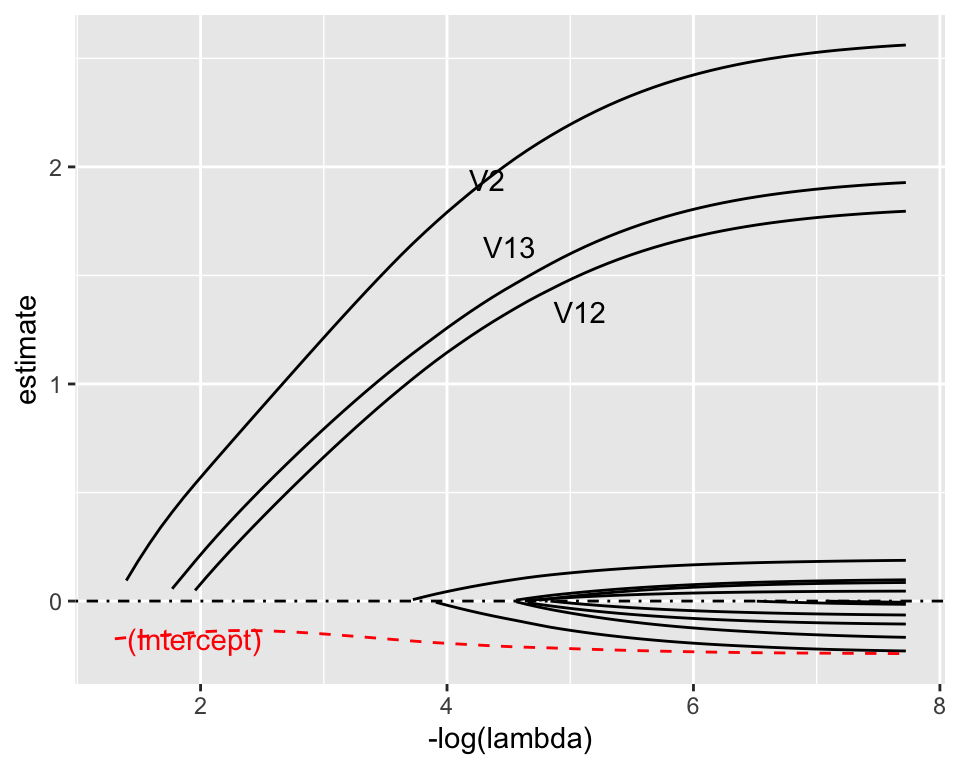
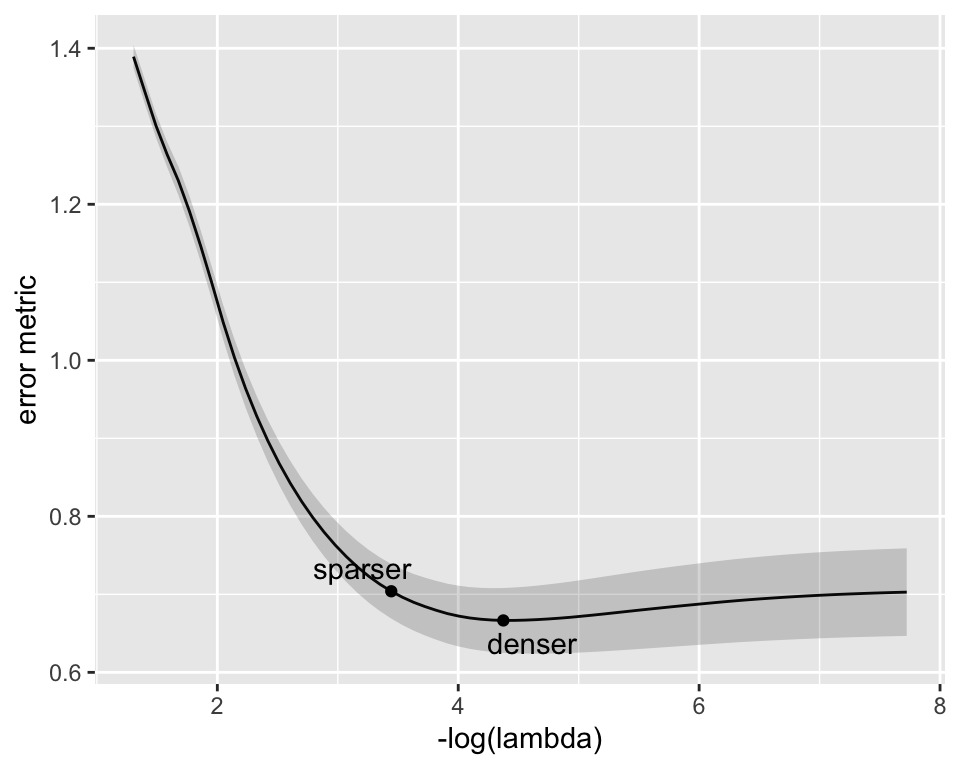
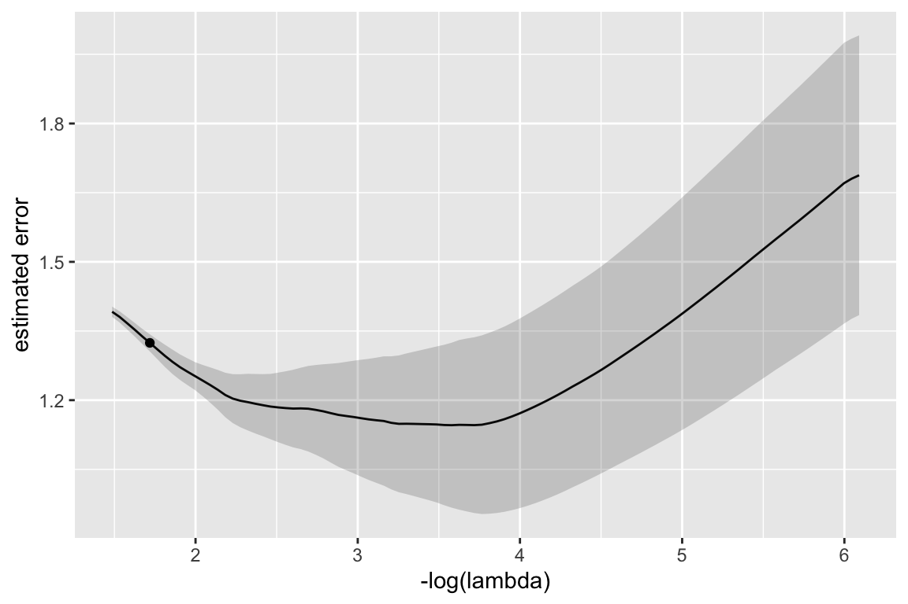
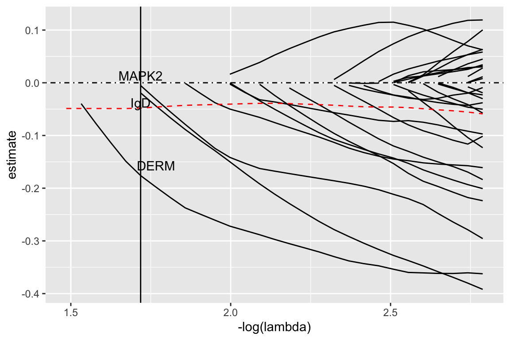

Variable selection with the LASSO
PSTAT197A/CMPSC190DD Fall 2025
Dr Coburn
UCSB
Announcements/reminders
Office hour information is posted on Canvas
Remember to fill out attendance form
Next group assignment due Friday, October 31st by 11:59 PM
Design assessment
10 Minute Activity
With your table, share your diagrams.
identify common elements/aspects
pick one or a blend that you like best and sketch it on the whiteboard or on a piece of paper
Design assessment
How would you score the proteomics analysis along the following dimensions?
reproducibility: how easy is it to reproduce the results exactly?
transparency: how widely distributed is potential variability in results across the elements of the data analysis?
replicability: how likely is it that if the study were conducted with new subjects, the same panel would be obtained?
An alternative analysis
Two steps
At a very high level, the analysis we’ve covered is a ‘two-step’ procedure:
- (selection step) select variables
- (estimation step) train a classifier using selected variables
A likely reason for this approach is that one cannot fit a regression model with 1317 predictors based on only 154 data points (\(p > n\)).
A schematic
Here’s a representation of the design of the analysis procedure.
lots of failure modes
repeated use of the same data for different sub-analyses
What about one step?
If we did simultaneous selection and estimation, our schematic might look like this:
Sparse estimation
Imagine a logistic regression model with all 1317 predictors:
\[ \log\left(\frac{p_i}{1 - p_i}\right) = \beta_0 + \sum_{j = 1}^{1317} \beta_j x_{ij} \]
Suppose we also assume sparsity constraint: a condition that most of them must be zero.
As long as the constraint is strong enough so that the number of nonzero coefficients is \(n\) or fewer (i.e., \(\|\beta\|_0 < n\)), one can compute estimates.
The LASSO
The Least Absolute Shrinkage and Selection Operator (LASSO) (Tibshirani (1996) ) is the most widely-used sparse regression estimator.
Mathematically, the LASSO is the \(L_1\)-constrained MLE, i.e., the solution to the optimization problem:
\[ \begin{aligned} \text{maximize}\quad &\mathcal{L}(\beta; x, y) \\ \text{subject to}\quad &\|\beta\|_1 < t \end{aligned} \]
Lagrangian form
The solution to the constrained problem
\[ \begin{aligned} \text{maximize}\quad &\mathcal{L}(\beta; x, y) \\ \text{subject to}\quad &\|\beta\|_1 < t \end{aligned} \]
can be expressed as the unconstrained optimization
\[ \hat{\beta} = \arg\min_\beta \left\{-\mathcal{L}(\beta; x, y) + \lambda\|\beta\|_1\right\} \]
where \(\lambda\) is a Lagrange multiplier.
Toy example
I simulated 250 observations according to a logistic regression model with 13 predictors, all but 3 of which had zero coefficients:
\[ \beta = \left[ 0\; 3\; 0\; 0\; 0\; 0\; 0\; 0\; 0\; 0\; 0\; 2\; 2\right]^T \]
And computed LASSO estimates for a few values of \(\lambda\).
# A tibble: 14 × 4
term truth lambda1 lambda2
<chr> <dbl> <dbl> <dbl>
1 Int -0.5 -0.171 -0.206
2 V1 0 0 0
3 V2 3 1.49 1.96
4 V3 0 0 0
5 V4 0 0 0
6 V5 0 0 0
7 V6 0 0 0
8 V7 0 0 0
9 V8 0 0 0.084
10 V9 0 0 0
11 V10 0 0 0
12 V11 0 0 -0.069
13 V12 2 0.892 1.29
14 V13 2 1.01 1.40 Constraint strength
In practice, \(\lambda\) controls the strength of the constraint and thus the sparsity:
Larger \(\lambda\) ➜ stronger constraint ➜ more sparse
Smaller \(\lambda\) ➜ weaker constraint ➜ less sparse
Selecting \(\lambda\)
How to choose the strength of constraint?
- Compute estimates for a “path” \(\lambda_1 > \lambda_2 > \cdots > \lambda_K\)
- Choose \(\lambda^*\) that minimizes an error metric.
Typically prediction error is used as the metric, and estimated by:
partitioning the data many times
averaging test set predictive accuracy across partitions
Regularization profile: estimates

Value of coefficient estimates as a function of regularization strength for the toy example. Each path corresponds to one model coefficient. Vertical line indicates optimal strength.
Regularization profile: error

Prediction error metric (‘deviance’, similar to RMSE) as a function of regularization strength. Two plausible choices shown – one more conservative, one less conservative.
\(\lambda\) selection
Estimate profile with optimal choice indicated by vertical line.
Coefficient estimates
| term | estimate | truth |
|---|---|---|
| (Intercept) | -0.1712466 | -0.5 |
| V2 | 1.4867846 | 3.0 |
| V12 | 0.8922530 | 2.0 |
| V13 | 1.0142979 | 2.0 |
Recomputing estimates
Notice that the estimate magnitudes are off by a considerable amount. If we recompute estimates without the constraint:
| term | estimate | std.error | statistic | p.value |
|---|---|---|---|---|
| (Intercept) | -0.2620012 | 0.1894367 | -1.383054 | 0.1666482 |
| V2 | 2.5653900 | 0.3313415 | 7.742434 | 0.0000000 |
| V12 | 1.7554670 | 0.2786778 | 6.299271 | 0.0000000 |
| V13 | 1.8323539 | 0.2632716 | 6.959937 | 0.0000000 |
Errors
Now if I simulate some new observations:
| .metric | .estimator | .estimate |
|---|---|---|
| sensitivity | binary | 0.8500000 |
| specificity | binary | 0.9000000 |
| roc_auc | binary | 0.9508333 |
Alternative analysis
Log-transform, center and scale, but don’t trim outliers.
library(tidymodels)
# read in data
biomarker <- read_csv('data/biomarker-clean.csv') %>%
select(-ados) %>%
mutate(across(-group, ~scale(log(.x))[,1]),
class = as.numeric(group == 'ASD'))
# partition
set.seed(101622)
partitions <- biomarker %>%
initial_split(prop = 0.8)
x_train <- training(partitions) %>%
select(-group, -class) %>%
as.matrix()
y_train <- training(partitions) %>%
pull(class)Estimated error

Coefficient paths

After dropping the penalty and recomputing estimates, the final model is:
| term | estimate | std.error | statistic | p.value |
|---|---|---|---|---|
| (Intercept) | -0.0404465 | 0.2312305 | -0.1749184 | 0.8611438 |
| MAPK2 | -0.9896079 | 0.2831955 | -3.4944340 | 0.0004751 |
| IgD | -0.8264133 | 0.2471363 | -3.3439569 | 0.0008259 |
| DERM | -0.9971069 | 0.2758803 | -3.6142740 | 0.0003012 |
| .metric | .estimator | .estimate |
|---|---|---|
| sensitivity | binary | 0.8125000 |
| specificity | binary | 0.7333333 |
| roc_auc | binary | 0.8375000 |
Some final thoughts
- Regardless of method, classification based on serum levels seems to achieve 70-80% accuracy out of sample.
- Not specific enough to be used as a diagnostic tool, but may be helpful in early detection.
- Published analysis seems a little over-complicated; computationally intensive methods are less transparent and more difficult to reproduce.
Concepts discussed
multiple hypothesis testing, FWER and FDR control
classification using logistic regression, random forests
variable selection using LASSO regularization
data partitioning and accuracy quantification
Transferrable skills
iterative computations in R, three ways
fitting a logistic regression model with
glm()use of
yardstickandrsamplefor quantifying classification accuracy
Tibshirani, Robert. 1996. “Regression Shrinkage and Selection via the Lasso.” Journal of the Royal Statistical Society: Series B (Methodological) 58 (1): 267–88.

PSTAT197A/CMPSC190DD Fall 2025